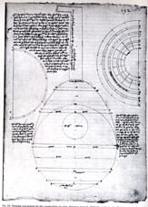
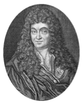
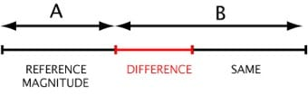
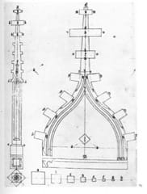

It is difficult nowadays to accept that the infinite variety of human and natural organisation depends on whole numbers alone. Modern mind doesn't conceive easily what truth is formulated in the words of Nichomachus and many others. The real meaning of the concepts seems to escape us.

Henri-Arnaut de Zwolle's drawing of a lute
incorporates the knowledge needed to design musical instruments.
The drawing, probably a copy of an earlier arabic model,
should be regarded as an exempla, i.e, a figure used in support
of instruction delivered by word of mouth.
From the 17th century, growing numbers of thinkers and artists argued that plain common sense led to opinions diametrically opposed to those of the Ancients.
This became the central issue of the dispute between the "Ancients" and the "Moderns", heralding a modernity in which the aesthetics of art abandoned all pretence of rationality for the sole criteria of subjectivity. The dismissal of reason went hand in hand with a growing incomprehension inherent in the mental universe inhabited by the promoters of modernity. The moderns were not far from considering the Ancients to have been guilty of poor reasoning when they saw, heard and allegedly measured relationships between Number, Beauty and Nature. Infant science was preparing to shed a quite different light on the coming century. Thus, it is at the point when the break between art and science occurred that the ancestral art of measurement was lost.

Claude Perrault, doctor and architect, translator of Vitruvius
and brother of Charles, was a protagonist in the dispute between the Ancients and the Moderns.
He was one of the first to cast doubt on the aesthetic value of proportionality.
The major causes of the change in the representation of things "existing or to come" were linked to two main factors. The first was the upheaval in the communication of knowledge caused by printing. It came as an earthquake which undermined the foundations of a society broadly organised around the oral transmission of knowledge and skills. The second was progress in mathematics, especially number theory and computation, which caused a shift in the concepts associated with measurement.
The philosophical definition of the unit had been central to the organisation and representation of objects. By attaching number to the essential and indivisible nature of being, the Ancients had represented to themselves the relations of things comparable through an evaluation of their "difference", which they also called "ratio" (reason).

For the Ancients, the notion of natural unit
does not apply to magnitudes like distances: the notion of measurement
derives from a comparison of two magnitudes specific to each object.
Although the logical extensions of these ancient mathematical formulations may tax the reflexes of a contemporary mind, they are fundamental to a substantial part of the philosophical discourse and it is only after they have been admitted that the apparent naivety of Pythagorean thought begins to dissipate.

Hans Schmuttermayer: constructing a pinnacle and gablet.
One of the first attempts to explain how to "draw out measurements
from the rotation of the square" (ie, the harmonic section).
The art of measurement, therefore, is founded on concepts which are no longer really meaningful to us. In the early 17th century, the metrological conception of measurement which we use today was beginning to spread, ultimately condemning the organic representation of form associated with the Euclidean definition of the unit.
The violin is an unexpected witness to what the art of measurement was for the Ancients. It sheds light on mental processes that have long remained inaccessible.